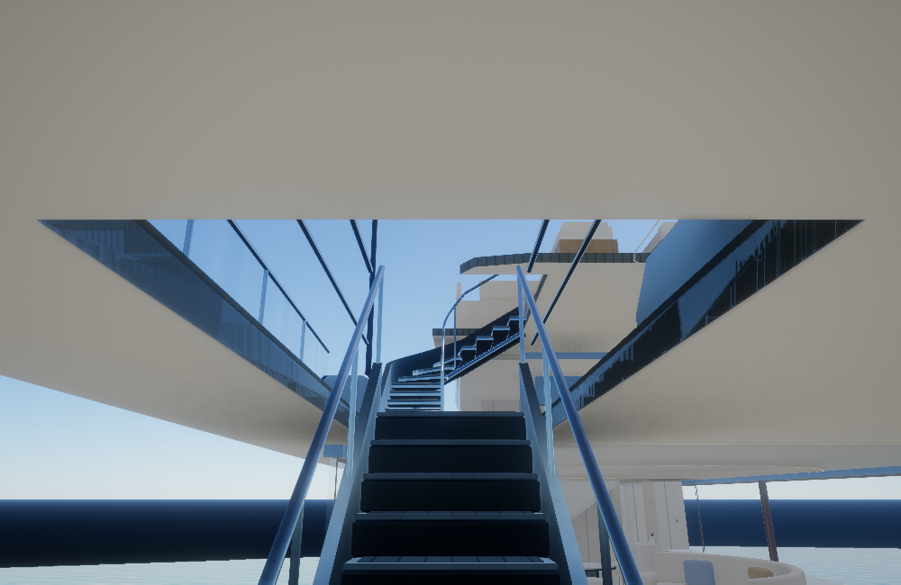
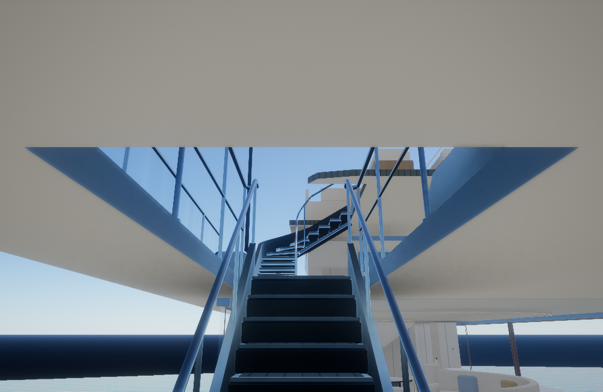
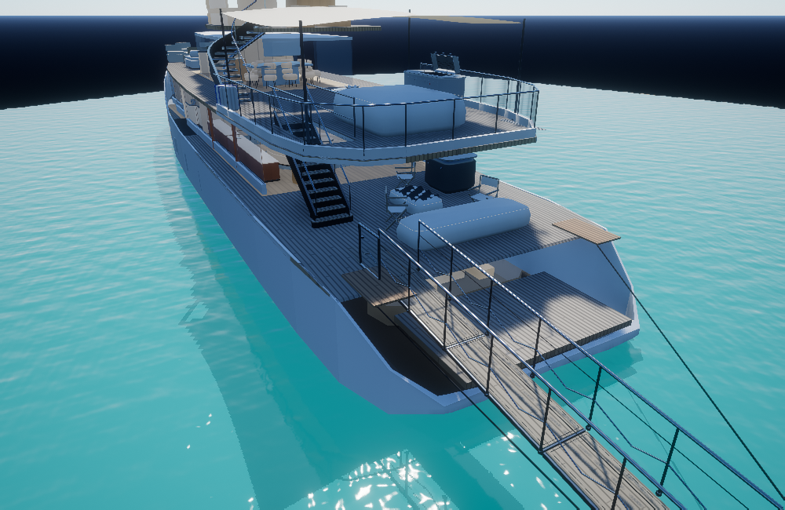
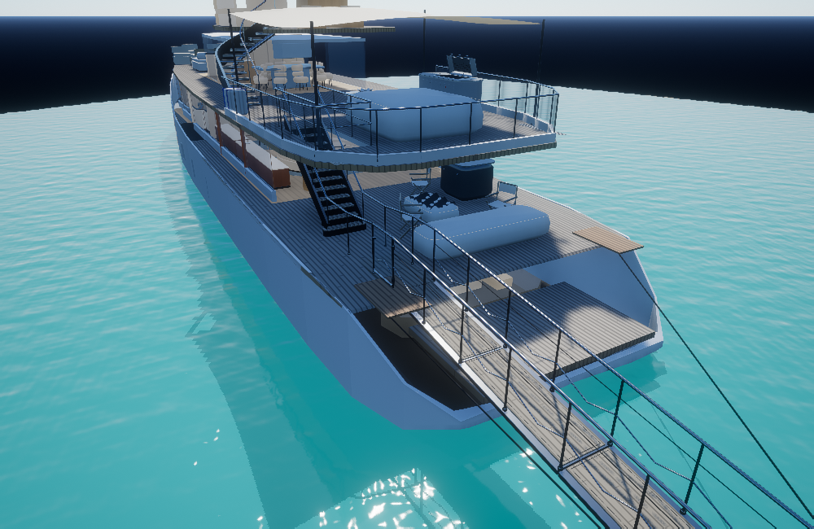
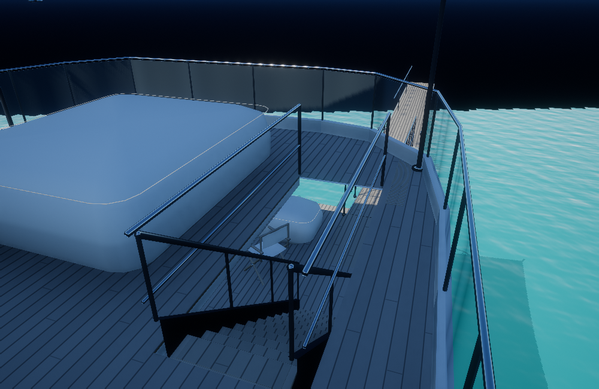
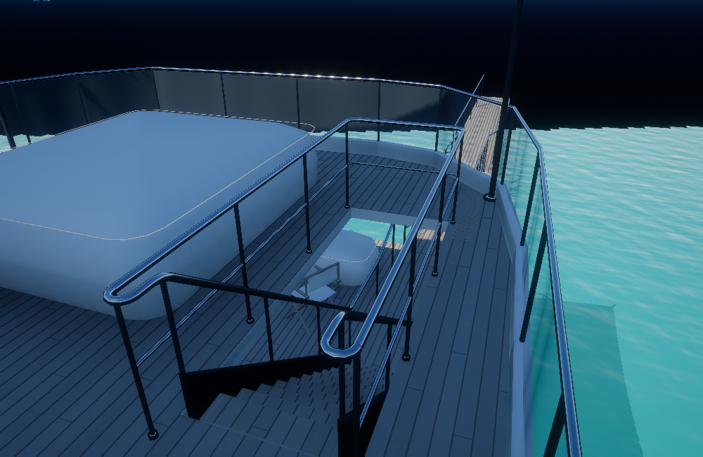
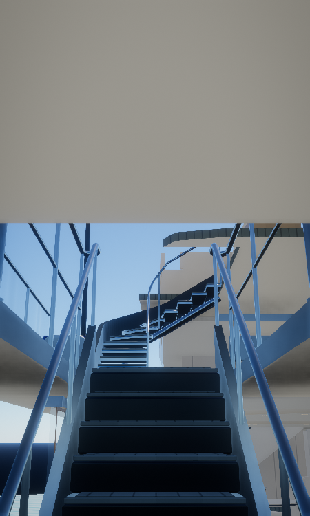

Entrar desde el muelle →Luz de Mar · Acceso y escaleras
Eliminadas las superficies superpuestas que cambiaban de color al subir. Los pasamanos siguen el muelle, la pasarela, el descanso y la escalera; sus tramos se conectan con retornos redondeados. La puerta queda abierta junto al paso y los postes apoyan sobre las superficies del acceso.
Ver la escalera de cerca →
Bordes del hueco y subida

Antes
DespuésMuelle, pasarela y descanso

Antes
DespuésUniones y retorno del piso superior

Antes
DespuésVista vertical

Renders de comprobación del modelo en una escena aislada. Se conservan los ajustes de imagen. Las dimensiones locales se estiman a partir de las referencias; no son medidas de construcción. Las fotos y el vídeo privados no se publican.
Referencias y alcance del modelo · Asador